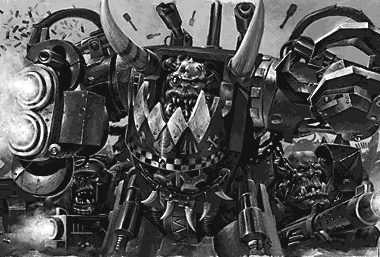

| ||
|
On the Day of the Feast of the Emperor's Ascension, fifty seven years to the day after the first Ork invasion, augur probes registered a massive disruption in the immaterium as an Ork fleet tore its way back into reality and Ghazghkull's hordes descended on Armageddon once more. An alert from monitor station Dante was cut off in mid-transmission as the Ork ships swept past in their hundreds. The monitor station's final reports indicated an Ork fleet moving into the system, comprising 50 Ork cruisers and over 300 escort vessels accompanying at least four space hulks. The forces of Armageddon were placed on full alert and seven Imperial cruiser squadrons, led by the Apocalypse class battleships His Will and Triumph, departed St. Jowen's Dock within twenty four hours. The Imperial fleet, under Admiral Parol, entered battle five days later, catching the lead elements of the Ork fleet in an ambush around the high-G world of Pelucidar.
 Nonetheless, the Ork fleet outnumbered that of Armageddon by six to one and the Imperial ships were gradually battered back. The Orks made suicidal rushes against the Imperial gun-lines with unbounded ferocity, losing a dozen of their ships in exchange for a single Imperial vessel. At the height of the engagement, Admiral Parol received comm-bursts from the Yarrick and Mannheim monitor stations warning of three more Ork fleets entering the edges of the system. Almost simultaneously, the Triumph was bracketed by five Ork kill kroozers and crippled by their combined heavy gunfire and massed teleport attacks. |
. |
Realising that his duty lay in preserving the fleet for a protracted conflict, Admiral Parol reluctantly gave the order for a general disengagement. The doomed monitor stations were overwhelmed a few hours later. By their last count, the combined Ork fleets numbered in excess of 2,000 ships and at least twelve space hulks, the largest number of hulks ever to assail a world of the Imperium in its 10,000 year history. Admiral Parol, his command reduced to five squadrons of cruisers and a single operational battleship, could do little more than mount hit and run attacks against the massive Ork armadas as they moved in-system. Imperial reinforcements would arrive soon, and then Parol could hope that Ghazghkull's control of space could be challenged with some hope of success. In the meantime, Parol's escorts and light cruisers harried the Orks as best as they could, distracting and drawing off their foes into baited traps and minefields, doing whatever was in their power to reduce the tidal wave of Ork machines arriving in-system. To their dismay, the Imperial Navy ships encountered dozens of crude asteroid fortresses, or 'Roks', in the normally vulnerable tail of the Ork fleets. These heavily armed weapons platforms proved difficult to attack directly, but the very presence of such unusual numbers of them seemed to indicate some more sinister design at work. Surprisingly, the Orks did not turn aside to capture St. Jowen's Dock. Instead they subjected it to a six day long bombardment as the Ork fleets moved past, enlivened by repeated attacks from assault boat squadrons. Ork warriors succeeded in establishing themselves throughout the lower sections of the dock, and, although the facility remained in Imperial hands, it was rendered virtually useless by damage from the bombardment and constant Ork raids. Only the arrival of two Ordo Xenos Inquisitorial kill-teams later in the campaign succeeded in driving the Orks back to the isotope storage pits at the base of the station.
|